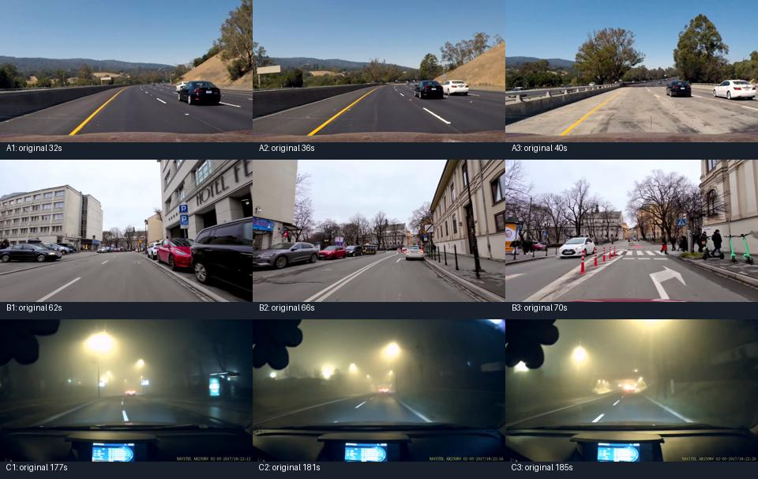
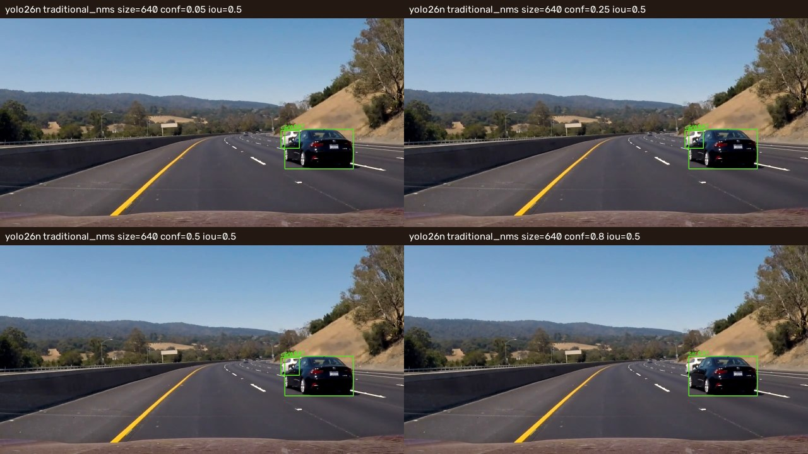
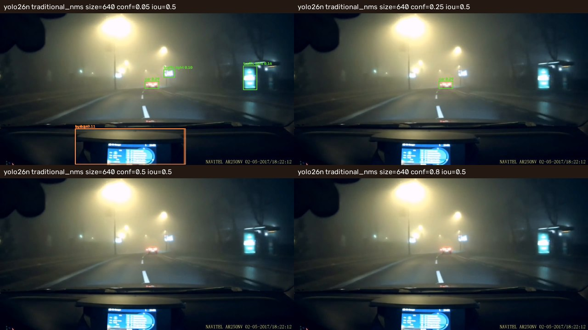
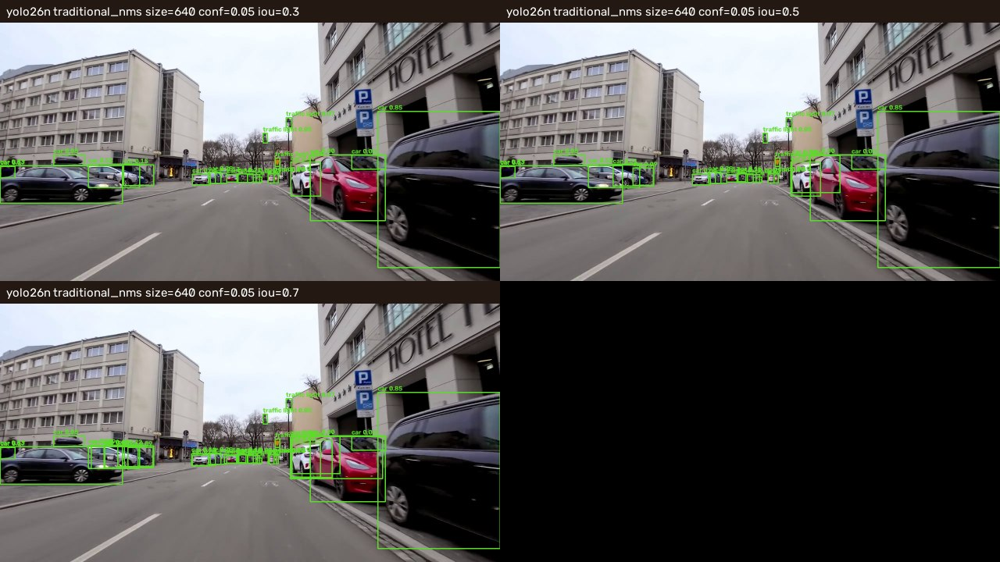
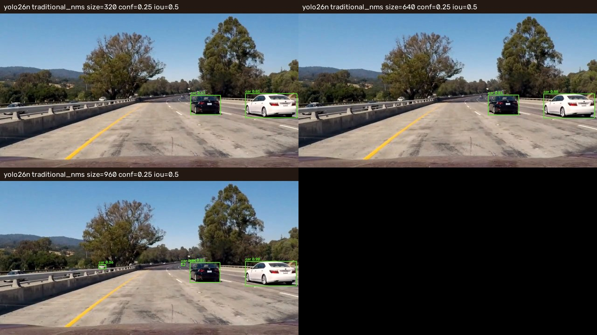
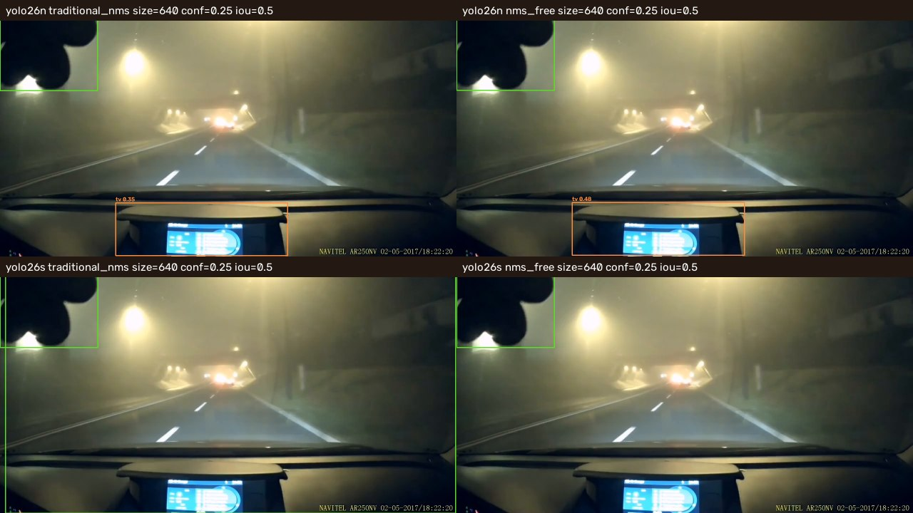

智能感知与自动驾驶技术 / 90 分钟。对标 E03 V2.1：生活化比喻—参数—观察—诊断—探索。先预测，后操作，每次只改变一个参数。

| 阶段 | 分钟 | 课堂问题 |
|---|---|---|
| 导入、基础检测 | 20 | 看见物体，还能说出位置吗？ |
| 置信度 | 15 | 为什么夜间车辆消失？ |
| IoU / NMS | 20 | 为什么一辆车有多个框？ |
| 模型与分辨率 | 20 | 看得更细一定更准吗？ |
| 视频及总结 | 15 | 怎样诊断连续检测失败？ |
课前：打开浏览器交互实验，先选 WASM、YOLO26n、640，确认真实推理状态及两幅图均显示。首次加载不等于推理耗时。
分类像问“照片里有什么”；检测还要回答“有几个、每个在哪里、机器有多大把握”。先让学生自己数，再让机器数。

选择 A1、B3，运行真实检测，再切换道路类与全部 COCO 类。询问：没有框是没有目标，还是模型漏掉了？车内支架是否被误认？
分数并不是校准的正确概率。检测数量也不是准确率。
分数线过低，错误答案也能进入；分数线过高，真正的目标也会被淘汰。

| 操作 | 观察与解释 |
|---|---|
| 0.25 → 0.50 | 浏览器实际 C1 测试（全部 COCO 类）由 1 框变成 0 框；原图没有变。 |
| 0.25 → 0.05 | 检查恢复的目标和新出现的干扰，低阈值不保证好。 |
追问：若更担心漏检行人，是否可以分类型阈值？代价是什么？
两个同学在地图上圈一个地方。重叠越多，越可能在说同一个目标；但是相邻汽车也可能重叠。

先拖动数学示例，IoU 从 0 到 1；再选 B1、conf=0.05，打开传统 NMS。浏览器实测全部类 0.30 → 0.70，由 21 → 33 框。提高阈值意味着更少抑制。关闭 NMS 看候选框。
追问：怎么分辨重复框与两辆车？现代 NMS-free 模型为何有不同输出？Python Notebook 可比较免 NMS 模式，网页为传统模式。
分辨率像望远镜，模型大小像识别经验。放大不创造原图中没有的细节；经验丰富也可能认错。


固定 n 与阈值，比较 320/640/960；再固定 640 比较 n/s。记录推理耗时与真实目标的框位置。GitHub CPU 实测 A3 的 n/320 62.1 ms、s/640 647.5 ms 同时改变两个变量，不能单独归因于模型。首次下载、预热和实际前向分开。
视频是一连串照片。前一张有车、后一张没画框，不代表车辆消失；要回到原图核实。
在实验 05 选 A/B/C；先暂停检测当前帧，再启动 2 Hz 抽样。12 秒视频计划得到 24 条记录，点击时间点重新定位。原视频 25 FPS、抽样 2 Hz、模型处理速度是三个概念，不是实时跟踪。
追问：数目突然变少，是否是目标退出视野、遮挡、低置信度？保持其他条件不变，试降低阈值。抽样期间不能改变参数，便于对照。
读取真实浏览器视频测试记录…
实测依据：完整视频抽样记录见 浏览器视频测试记录；未提供逐框真值，不能称为检测准确率。
| 现象 | 先检查 | 尝试 |
|---|---|---|
| 夜间车漏检 | 分数是否不过线 | 降低 conf，观察误检 |
| 重复框 | 是否同类同目标 | 降低 IoU |
| 相邻车少一辆 | 是否误抑制 | 提高 IoU |
| 远处车看不清 | 输入像素太少 | 固定模型增大尺寸 |
| 视频框闪烁 | 相邻时刻真实画面 | 定位帧，检查阈值 |
记录场景、旧参数、新参数、原图与结果、解释和可重复验证的改进假设。不把“最好看”作为实验终点。
素材、作者、许可及改动详见 sources.json；A MIT，B/C CC BY 3.0。图像对照来自审核包实测结果（108 次前向，1296 组后处理），不是浏览器截图。仅教学，不用于驾驶决策。